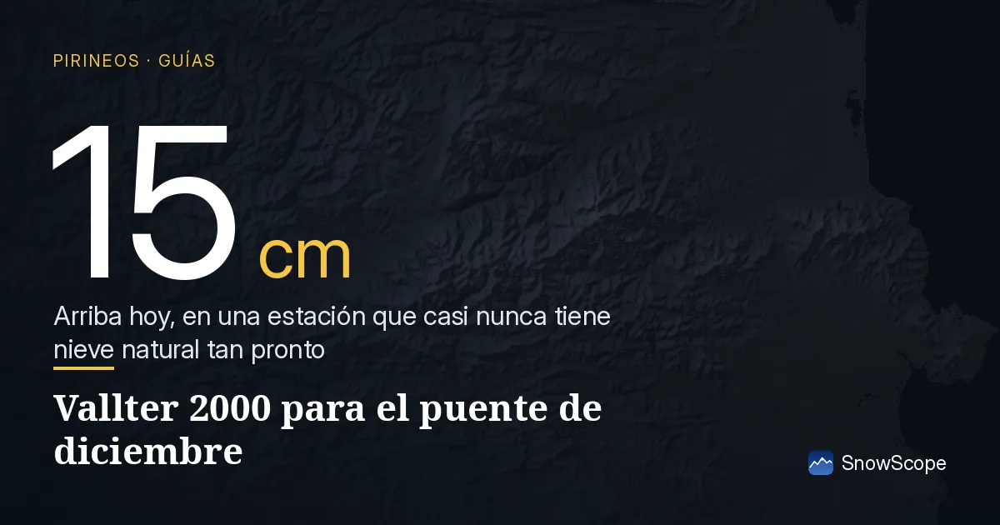

Vallter 2000 para el puente de diciembre: 15 cm arriba hoy, en una estación que casi nunca tiene nieve natural tan pronto
Vallter 2000 tiene hoy 15 cm de nieve en la parte alta, y a 2.252 m el manto es de 3 cm, cuando un 27 de noviembre normal apenas tiene 1 cm. Es un comienzo poco habitual para el Pirineo oriental, pero sin nuevas nevadas hasta el lunes la estación llegará al puente con lo que tiene y con lo que fabriquen sus cañones.
Consulta la previsión de nieve en tiempo real de Estació d'esquí i muntanya Vallter 2000 en la app SnowScopeEspesor de nieve, alertas de nieve polvo y mapa 3D, gratis.
La nieve de esta semana
El miércoles cayeron 8 cm y el jueves 2 cm. Desde entonces no ha nevado y la capa baja poco a poco: el lunes 30 rondará los 11 cm en cota alta. En siete días la previsión es prácticamente nula.
La estación va de 2.010 m a 2.495 m, en la cabecera del Ter, y es una de las más altas de Cataluña. Su orientación norte ayuda a conservar la nieve en días de sol.
Lo que dice la historia: el Pirineo oriental es seco en diciembre
Los números de 46 inviernos son claros. A 2.252 m lo habitual el 8 de diciembre son 4 cm y el 25 de diciembre 6 cm; un invierno de cada cuatro tiene más de 17 cm en Navidad. El 27 de noviembre solo había nieve en el suelo en el 53 % de los inviernos.
Las grandes nevadas del Ripollès llegan sobre todo con temporales de levante, que traen humedad del Mediterráneo, y son más frecuentes a finales de invierno. Por eso Vallter, como La Molina o Masella, vive de la nieve producida en el inicio de temporada.
¿Y el puente de la Constitución?
Con la nieve natural actual, más el frío de los próximos días para fabricar nieve, el puente del 5 al 8 de diciembre debería poder empezar con varias pistas abiertas en la parte alta. La decisión de apertura es de la estación; mirad su información oficial antes de salir.
La Molina, en la Cerdanya, está peor: 8 cm arriba hoy y 0 cm a 2.086 m, por debajo de su normal de 7 cm. Este año, la nieve ha caído más al este de lo habitual.
Por qué ir a Vallter
Es una estación pequeña y familiar, con pistas amplias en un circo de alta montaña y vistas al Canigó y al Puigmal. Está a unas dos horas y media de Barcelona por Ripoll y Setcases. Fuera de los fines de semana es muy tranquila, y el pueblo de Setcases, abajo en el valle, es uno de los más bonitos del Ripollès.
Para quien empieza o va con niños, el tamaño es una ventaja: todo queda cerca, las colas son cortas y la escuela trabaja sobre pistas suaves.
Preguntas frecuentes
¿Hay nieve suficiente para esquiar fuera de pista? No. Con unos centímetros de nieve natural sobre roca y hierba, el fuera de pista es peligroso para los esquís y para las rodillas. Hay que quedarse en las pistas preparadas.
¿Va a nevar antes del puente? La previsión de los próximos siete días es casi nula en el Ripollès. Puede cambiar, pero de momento la nieve del puente será la que hay más la producida.
¿Cuándo es mejor ir a Vallter? En febrero y marzo, cuando los temporales de levante suelen dejar las mejores nevadas del Pirineo oriental. En diciembre conviene mirar la previsión la semana antes.
Consejos para el puente
Subid temprano: la carretera de Setcases a la estación es estrecha y el aparcamiento se llena los días de puente.
Consultad la página de nieve de Vallter 2000 y la de La Molina el día antes de salir: allí están la nieve de cada día y la previsión.
Consejos para esquiadores
- Llevad cadenas: la carretera de acceso puede helarse por la mañana.
- Por la mañana la nieve está dura; las pistas al sol mejoran a partir de las 11.
- Si buscáis más dominio, combinad con Ripoll y la Vall de Núria en el mismo viaje.
- Más estaciones cercanas: nuestra guía de Port del Comte y la página de España.
Sobre estas cifras
Cifras de nieve: el mapa y la previsión de SnowScope de hoy y nuestro histórico de 46 inviernos pasados en cada estación (una estimación para la zona, no el parte de la estación).
Boletines oficiales de aludes: ICGC – Butlletí de perill d'allaus (Catalunya)
Citar este informe
Para investigación, docencia o prensa: cifras y gráficos reutilizables libremente bajo CC BY 4.0 con esta cita.
SnowScope (2026), Vallter 2000 para el puente de diciembre: 15 cm arriba hoy, en una estación que casi nunca tiene nieve natural tan pronto, https://snowscope.app/blog/es/2026/11/vallter-2000-puente-de-diciembre-2026-nieve-hoy-y-lo-que-dice-la-historia.html, consultado el 2026-11-27
SnowScope (Atlas Labs). (2026, November 27). Vallter 2000 para el puente de diciembre: 15 cm arriba hoy, en una estación que casi nunca tiene nieve natural tan pronto. SnowScope snow reports. https://snowscope.app/blog/es/2026/11/vallter-2000-puente-de-diciembre-2026-nieve-hoy-y-lo-que-dice-la-historia.html
BibTeX
@misc{snowscope2026vallter2000puentededicie,
author = {{SnowScope (Atlas Labs)}},
title = {Vallter 2000 para el puente de diciembre: 15 cm arriba hoy, en una estación que casi nunca tiene nieve natural tan pronto},
year = {2026},
month = nov,
howpublished = {\url{https://snowscope.app/blog/es/2026/11/vallter-2000-puente-de-diciembre-2026-nieve-hoy-y-lo-que-dice-la-historia.html}},
note = {Published 2026-11-27 19:53 UTC; accessed 2026-11-27}
}· CC BY 4.0 · Métodos, datos y herramientas →
Sigue Estació d'esquí i muntanya Vallter 2000
Gratis: un aviso cuando llega la nieve y la previsión cada mañana.